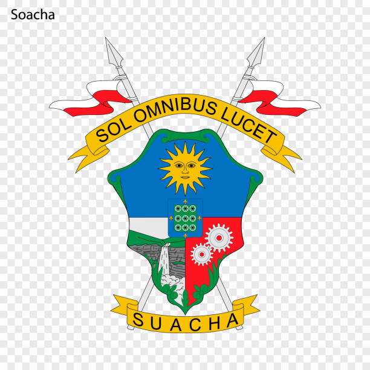

Escudo de Soacha
 Bandera de Soacha
Bandera de Soacha
Bandera de Soacha
Bandera de Soacha
La alcaldía de Soacha, en la era de una nueva administración pública, nos enfrentamos al desafío y la oportunidad de trazar un rumbo que responde eficazmente a las necesidades y aspiraciones de nuestra comunidad, a través del Plan de Desarrollo "El desarrollo es el plan 2024-2027", enfocado a la transformación de la ciudad con una visión inclusiva, sostenible, integral, participativa y tecnológica que refleje equidad social en el municipio, teniendo al ser humano como eje central de nuestra administración, garantizando que cada iniciativa y acción emprendida se realice con los más altos estándares de calidad, respondiendo a las necesidades y aspiraciones de nuestra comunidad.
Orientar hacia el desarrollo social y económico integral de Soacha, buscando transformar la ciudad mediante el aprovechamiento de nuestro patrimonio cultural, la ubicación geográfica y la vocación productiva, pero sobre todo, el talento humano de sus residentes.
En 2027 Soacha será una ciudad competitiva con crecimiento sostenible y equidad social para todos los habitantes, fortaleciendo el tejido social, ambiental, industrial, económico, educativo y tecnológico, promoviendo la participación democrática para una mejor calidad de vida de nuestros ciudadanos.
Volver al inicio